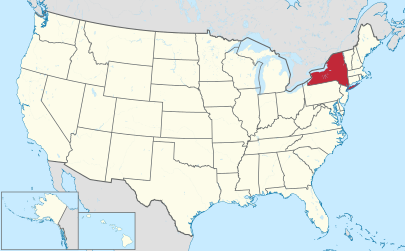
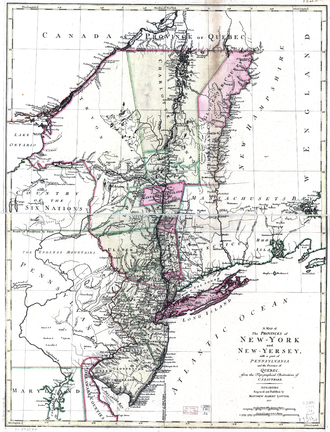
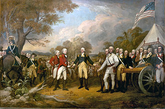
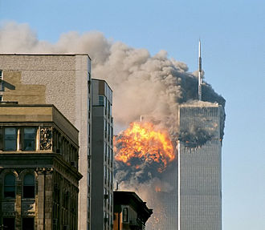

New York is a state in the Northeastern and Mid-Atlantic regions of the United States.
New York is the 27th-most extensive, the fourth-most populous, and the seventh-most densely populated
of the 50 United States. New York is bordered by New Jersey and Pennsylvania to the south and Connecticut,
Massachusetts, and Vermont to the east. The state has a maritime border with Rhode Island east of Long Island,
as well as an international border with the Canadian provinces of Quebec to the north and Ontario to the west and north. The state of New York
is often referred to as New |
 |
New York City, with a Census-estimated population of over 8.4 million in 2013, is the most populous city in the United States.
It is the nucleus of the premier gateway for legal immigration to the United States, the New York City Metropolitan Area,
one of the most populous urban agglomerations in the world. New York City is also known for being the location of Ellis Island,
the largest historical gateway for immigration in the history of the United States |
 |
city, New York City exerts a significant impact upon commerce, finance, media, art, fashion, research, technology, education and entertainment.
The home of the United Nations Headquarters, New York City is an important center for international diplomacy and has been described as the cultural and financial capital of the world.
New York City alone makes up over 40 percent of the population of New York State. |
 |
On September 11, 2001, two of four hijacked planes were flown into the former Twin Towers of the World Trade Center in Lower Manhattan.
The towers collapsed. 7 World Trade Center also collapsed due to damage from fires.
The other buildings of the World Trade Center complex were damaged beyond repair and soon after demolished.
|

|